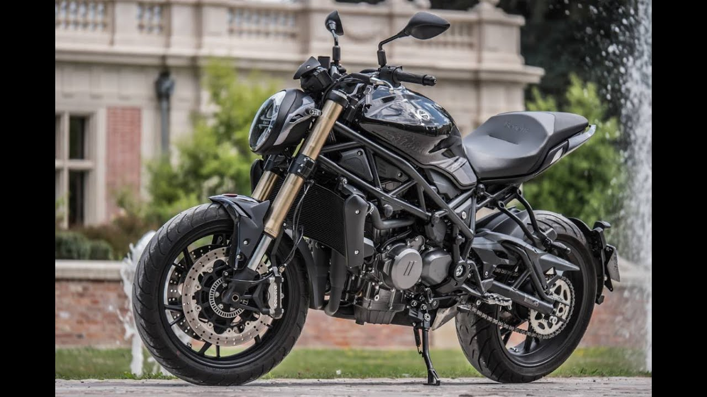

Benelli vuelve al segmento de las motos de media cilindrada con esta 752S, una moto naked que sigue la línea estética del segmento pero con puntos muy diferenciadores como el faro frontal, el sistema de escape o sus suaves líneas redondeadas.

BENELLI-302S
Un diseño que no puede negar sus fuentes, esa impronta que imprime el genuino diseño italiano que sigue manteniendo viva la llama de una histórica como Benelli y que se beneficia del músculo industrial del gigante chino. Esa unión de factores se materializa en un modelo de sólida presencia que en su última versión presenta un ligero restiling que le proporciona un aire nuevo y más actual.